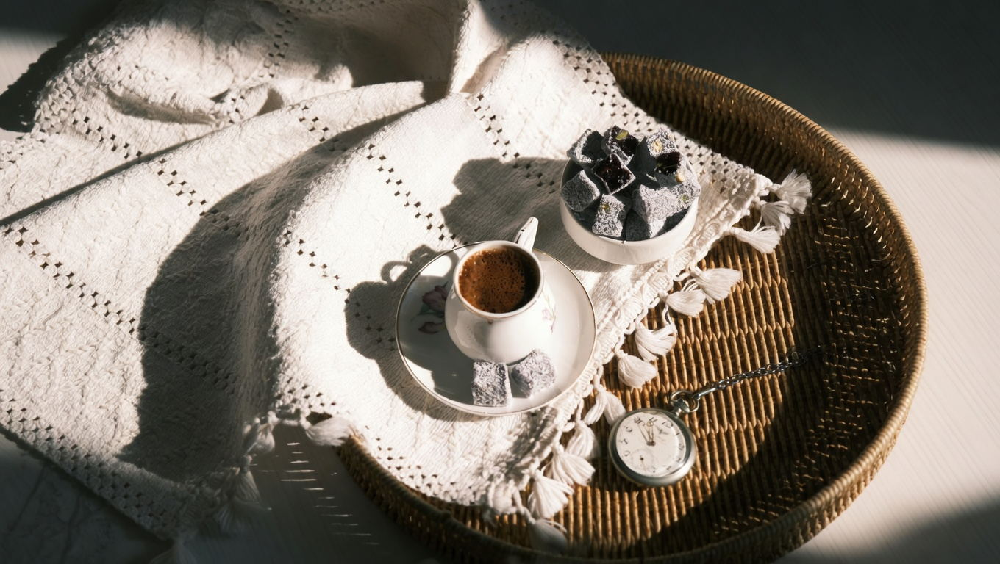

Sanata dönüşen
lezzetler
Bakır kazanda, odun ateşinde, glikoz şurubu kullanmadan. Lok-Art lokumları doğal kaynak suyu ve hakiki bal ile, her gün elde üretilir.
Lok-Art'ı ayıran dört şey
Glikoz şurubu yok
Doğal kaynak suyu, nişasta ve hakiki bal. Tatlandırıcı ve koruyucu kullanılmaz.
Odun ateşinde pişirim
Bakır kazanda, ustanın kontrolünde. Doku ve tat bu yüzden farklı.
Günlük üretim
Stok için değil, sipariş için üretilir. Kutuya giren her parça o güne aittir.
Türkiye geneli kargo
2.000 TL üzeri siparişlerde kargo bizden. Soğuk zincir gerektiren ürünlerde özel paketleme.
Hediye edilmek için hazır
Metal kutusu, kurdelesi ve içindeki seçkiyle; ayrıca paketleme gerektirmeyen imza kutularımız.
Nereden başlamak istersiniz?
En çok tercih edilenler
Makine değil, usta eli
Lokum sabır isteyen bir iştir. Dört adımın hiçbiri hızlandırılamaz.
-
01
Bakır kazanda pişirim
Doğal kaynak suyu, nişasta, şeker ve hakiki bal odun ateşinde saatlerce karıştırılır. Kıvam termometreyle değil, gözle ve elle anlaşılır.
-
02
Mermerde dinlenme
Pişen hamur mermer tezgâha alınır ve kendi hâlinde dinlenir. Bu adım atlanırsa doku tutmaz, kesitte katmanlar dağılır.
-
03
İç harçla sarma
İnce açılan hamur; fıstık, ceviz, badem veya kadayıfla elde sarılır. Her rulo aynı kalınlıkta olsun diye tek tek kontrol edilir.
-
04
Elle dilimleme
Rulolar bıçakla, tek tek dilimlenir. Kesitteki her katman bu el işçiliğinin izidir — makine kesiminde o iz kaybolur.
Kahvenin yanındaki
tek şey
Lokum, ikramın kendisidir. Bir fincan sade kahve, iki parça sarma — misafirliğin en eski cümlesi hâlâ bu.
Glikoz şurubu kullanılmadığı için damakta ağırlık bırakmaz; tatlılığı ölçülüdür, kahvenin acılığını bastırmaz. Her gün üretildiği için de dokusu taze kalır.
Kutunuzu kendiniz kurun
Altı çeşide kadar seçim yapın, metal kutuda hazırlayalım. Kurumsal hediyeler, düğün ikramlıkları ve özel günler için en sevilen seçeneğimiz.